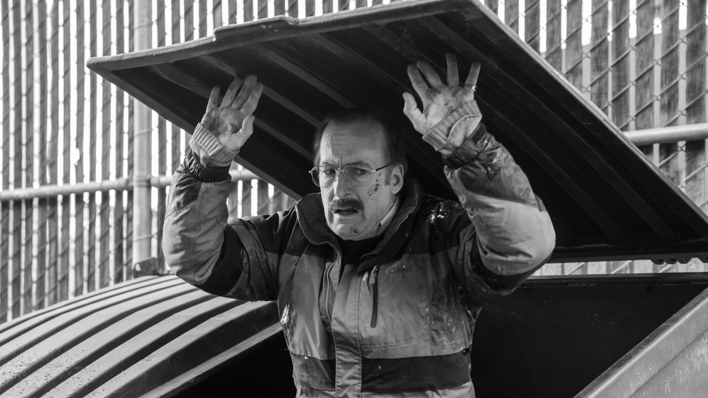

Breaking Bad es considerada una de las mejores series y con justa razón. A pesar de que finalizó hace varios años, su serie spin-off, Better Call Saul continuó replicando su éxito debido a la cruda historia y personajes entrañables que presenta.
Jude Bellingham es un futbolista británico que juega de centrocampista en el Real Madrid C. F. de la Primera División de España.1 Cada vez que marca un gol, Jude Bellingham se planta frente a la grada y con pose firme abre los brazos de par en par. La imagen es tremendamente potente. Por ello se ha convertido en imagen de portadas y productos de merchandaising.

Se considera que haya una posible relacion entre la celebración del jugador del Real Madrid y la famosa serie de televisión, ya que en un pasado el actor que da vida al personaje de Walter White, Bryan Cranston es fanatico del equipo madridista, y asi lo dejó ver en la visita que realizó al Santiago Bernabeu en 2021
No es la primera vez que podemos observar este tipo de gestos dentro de la serie, ya que tenemos dos ejemplos parecidos en las dos series de este universo, en Breaking Bad, y en Better Call Saul.
La serie consta de cinco temporadas y sesenta y dos capítulos a lo largo de los cuales se nos muestra la voluntad de un hombre por cambiar y como esos cambios le van a afectar a él pero también, desafortunadamente, a todos aquellos que le rodean y quieren. Walter White lleva una aburrida vida dedicada a dar clases a unos alumnos que no tienen ningún interés por la química complementando su sueldo como encargado de una lavandería de coches cuando le informan que padece un cáncer incurable. Esta noticia va a ser el detonante que lo cambie todo porque Walter White es un genio de la química y a partir de entonces va a enfocar todos sus conocimientos a “cocinar” metanfetamina. Con la ayuda de Jesse Pinkman, un antiguo alumno suyo que se gana la vida trapicheando con droga, se lanza a la las calles a la conquista de un mundo donde reina el dinero, la ambición y la violencia.
| Temporada | Episodios | Sinopsis |
|---|---|---|
| 1 | 7 | Walter White, un profesor de química con cáncer terminal, se asocia con su exalumno Jesse Pinkman para fabricar y vender metanfetaminas. A medida que entran en el peligroso mundo del narcotráfico, Walter descubre sus habilidades para el crimen y la manipulación. |
| 2 | 13 | Walter y Jesse enfrentan desafíos más intensos mientras continúan su operación de drogas. Problemas familiares, tensiones con otros traficantes y eventos trágicos complican sus vidas. La temporada culmina en un accidente aéreo vinculado indirectamente a sus acciones. |
| 3 | 13 | La relación entre Walter y Jesse se vuelve más tensa, especialmente con la intervención de Gustavo Fring, un peligroso narcotraficante que los contrata. Aparecen conflictos entre los personajes, llevando a un enfrentamiento impactante en el último episodio. |
| 4 | 13 | Walter y Jesse se encuentran en una situación cada vez más peligrosa mientras trabajan para Gustavo Fring. La tensión llega a su punto álgido en un enfrentamiento explosivo que altera el equilibrio de poder en el mundo de las drogas. |
| 5 | 16 | Después de eliminar a Gustavo Fring, Walter y Jesse se asocian con Saul Goodman para expandir su operación. Sin embargo, nuevos problemas surgen, y Hank, el cuñado de Walter, descubre la verdad sobre su doble vida. Walter White se enfrenta a las consecuencias de sus acciones mientras la DEA cierra el cerco. El conflicto con Hank alcanza su punto culminante, y Walter se ve obligado a tomar decisiones extremas para protegerse a sí mismo y a su familia. |